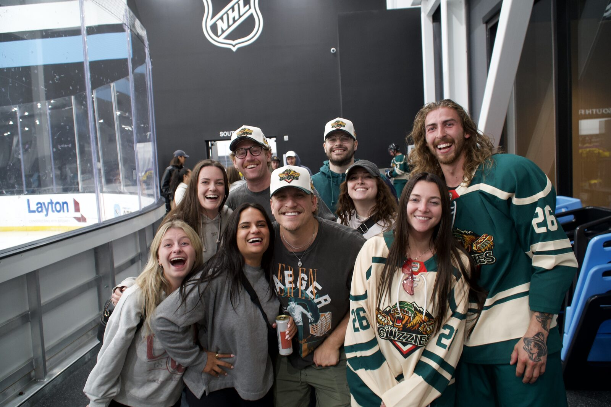

You signed up for a beer league, your first game is in two weeks, and you just realized you've never actually shot a puck at a net that wasn't a driveway goal. Welcome to the club. The fix is cheap, low-pressure, and sitting on the Wasatch Front right now: stick and puck.
Stick and puck is open ice for hockey players. No game, no coach, no referee, no one yelling "your other left." You show up with a stick, a puck, and your gear, and you skate, shoot, and stickhandle at your own pace. It's the beer leaguer's gym, and it is where most of us got from "falling over" to "falling over while holding a stick."
Schedules and prices change, so treat this as a map, not a contract, and confirm with the rink before you drive over.
Want the full rink list? Our directory of ice rinks in Utah covers the rest.

Rinks typically require a helmet at minimum and recommend gloves and shin protection. If you're borrowing or renting, ask the rink what they offer. If you're buying, our beginner equipment checklist and our guide to where to buy and rent hockey gear in Utah will keep you from overspending.
Keep your head up, call out when you're cutting across, don't blast pucks at people, and give beginners space. Everyone there is working on something. Most of us are working on everything.
The Glizzies play out of the Utah Mammoth Ice Center in Sandy. Get your reps in, then come find a team that takes hockey seriously and itself not at all.
Meet the Team Go to The PitOnce you can stop, turn, and get a puck on net, you're ready. Check our guides to joining a beer league in Utah and adult hockey leagues in Salt Lake City. The Utah Mammoth opened their 2026-27 season at the Delta Center on October 1, and if that has you inspired, now is a great time to get on the ice yourself.